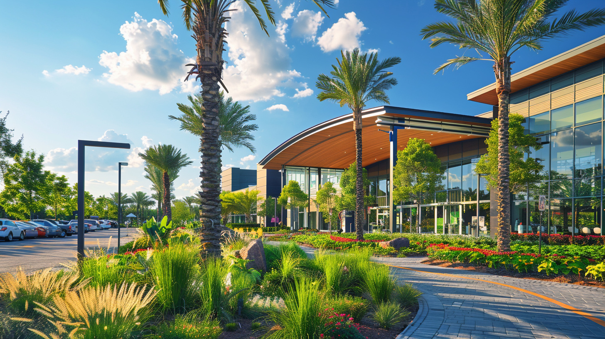
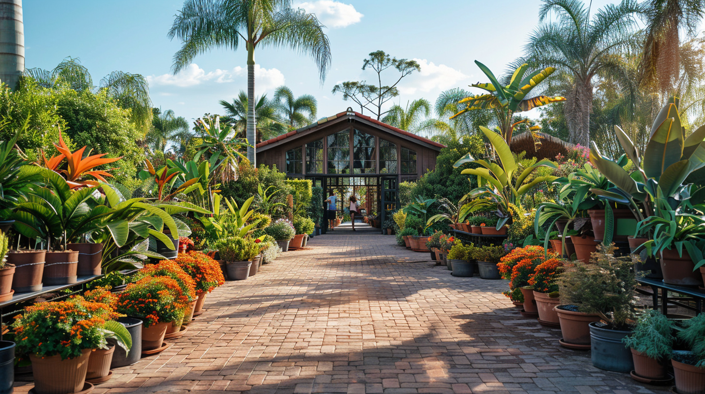

Jardiland Baie-Mahault
Adresse : Centre commercial Jardi-Village, Jabrun — 97122 Baie-Mahault
Horaires : Lun-Sam 8h30-19h · Dim 9h-13h
Téléphone : 0590 60 67 00
Baie-Mahault et Les Abymes : retrouvez Jardiland aux deux carrefours stratégiques de l'île.
Vous cherchez une jardinerie proche de moi en Guadeloupe ? Nos deux magasins partagent les mêmes équipes engagées, les mêmes Jardiland horaires (lun-sam 8h30-19h, dim 9h-13h) et deux emplacements idéalement répartis.

Adresse : Centre commercial Jardi-Village, Jabrun — 97122 Baie-Mahault
Horaires : Lun-Sam 8h30-19h · Dim 9h-13h
Téléphone : 0590 60 67 00

Adresse : Rond-point de Providence — 97139 Les Abymes
Horaires : Lun-Sam 8h30-19h · Dim 9h-13h
Téléphone : 0590 30 02 66

Un site internet montre. Un magasin laisse choisir, comparer, comprendre — et repartir avec la bonne solution.
Photos de votre parcelle, contraintes spécifiques, projet en tête : nos équipes vous accompagnent du diagnostic à la solution.
Une plante en photo n'est pas une plante en vrai. Une terrasse aménagée, ça se ressent. Le magasin, c'est l'expérience.
Un doute en rentrant chez vous ? Un problème de mise en route ? On reste joignables.
Horaires, accès, services : tout ce qu'il faut savoir avant de venir.
Les horaires Jardiland sont identiques dans nos deux magasins :
Lundi à samedi : 8h30 – 19h
Dimanche : 9h – 13h
Ces horaires s'appliquent à nos deux magasins Jardiland Guadeloupe : Baie-Mahault et Les Abymes.
Jardiland Baie-Mahault : Centre commercial Jardi-Village, Jabrun — 97122 Baie-Mahault — Tél 0590 60 67 00.
Jardiland Les Abymes : Rond-point de Providence — 97139 Les Abymes — Tél 0590 30 02 66.
Les deux magasins disposent d'un parking gratuit et sont accessibles aux personnes à mobilité réduite.
Oui, nos deux magasins Jardiland Guadeloupe abritent une animalerie complète : croquettes premium pour chiens et chats, accessoires, soins d'hygiène, rayons rongeurs et aquariophilie. L'offre est identique sur les deux sites.
Les deux magasins assurent la livraison à domicile pour les achats volumineux. En général, vous serez livré depuis le magasin le plus proche de votre commune. Renseignez-vous au comptoir : nos équipes coordonnent ensemble pour vous offrir la meilleure disponibilité.
Deux adresses, une même équipe passionnée. À vous de choisir la plus proche.